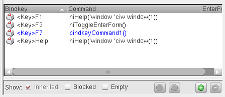
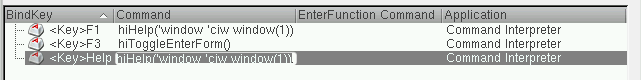

Configuring Application Bindkeys
You can override bindkeys inherited from the root application by defining a new bindkey for an inherited application.
You can configure - add, edit, or delete - the bindkey settings for an application using the Bindkey Editor form that is accessible by selecting Options – Bindkeys from the CIW.
Adding a Bindkey
- In the Application Tree, to the left of the Bindkey Editor form, select the application for which you want to create a new bindkey.
-
Select the Add binding button to add the new bindkey.
You need to press the new bindkey combination.
If you have more than one application selected in the Application Tree, an additional Application column gets added to the table, specifying what application a bindkey belongs to. -
To add the new bindkey, you can either type the required bindkey directly into the Bindkey Table or select the appropriate Mouse or Key icons to invoke the Capture mouse binding and Capture key binding forms.
Once you have specified the bindkeys, the new bindkey entry gets recorded in the Bindkey Table. -
Optionally, add a Command and EnterFunction Command to be associated with the new bindkey by double-clicking on the appropriate cell in the Bindkey Table.
The new bindkey gets displayed in blue text in the Bindkey Table indicating that is has been newly created, but not yet saved.
 -
Click the Save button.
The Save Bindkeys form is displayed where you can now save the application bindkeys to file for reuse.
Capturing Mouse and Key Bindings
You can use the Capture mouse binding and Capture key binding forms to capture actions that cannot be intuitively capture using the text entry field.
Selecting the Mouse icon displays the Capture mouse binding form while selecting the Key icon displays the Capture key binding form.
Duplicate Bindkeys
To create a new bindkey you need to enter a bindkey combination that already exists. A Duplicate bindkeys detected message box gets displayed.
From here, you can choose to Discard the new bindkey setting, or to Apply the bindkey setting anyway.
If you chose to Apply the bindkey, the Bindkey table then shows that there is a duplicate bindkey issue.
From here however, you can now choose to delete one of the keybindings commands, be that the original binding or the newly created one.
Deleting a Bindkey
-
Select Options – Bindkeys from the CIW window.
The Bindkey Editor form is displayed. - In the Application Tree, to the left of the form, select the application that you want to remove a new bindkey from.
-
In the Bindkey Table, to the right of the form, select the bindkey that you want to delete.
-
Click the Remove binding button.
The bindkey gets deleted from the currently selected application. -
Click the Save button.
The Save Bindkeys form is displayed where you can now save the application bindkey list.
When a bindkey is deleted from the Bindkey Editor, rather than it being removed completely, an empty bindkey is left in its place. For example, you cannot delete a Ctrl+E binding, rather it becomes an empty (unused) binding. Such bindings cannot be viewed in the Bindkey Editor, rather, the saved bindkey file stores any empty settings which can also be viewed when performing a Preview.
Editing a Bindkey
-
Select Options – Bindkeys from the CIW window.
The Bindkey Editor form is displayed. -
In the Application Tree, select the application(s) that you want to edit bindkeys in.
The BindKey Table gets updated to show all of the bindkeys in the currently selected application(s). - Optionally, use the Search option to filter the bindkey listing displayed in the BindKey Table.
- Select the bindkey that you want to edit.
-
Edit the Command and EnterFunction Command settings as required.
Double-clicking on the appropriate bindkey option field (Command or EnterFunction Command) allows you to edit the bindkey directly in the BindKey Table. - Click Apply to set the bindkey edits.
-
Click Save to record the bindkey updates that have been made.
The bindkey edits can now be used as required.
Related Topics
Return to top